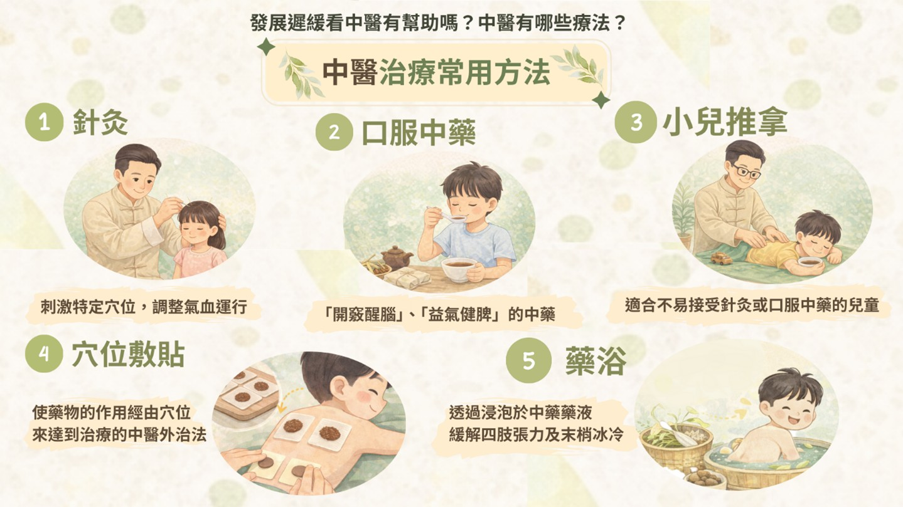
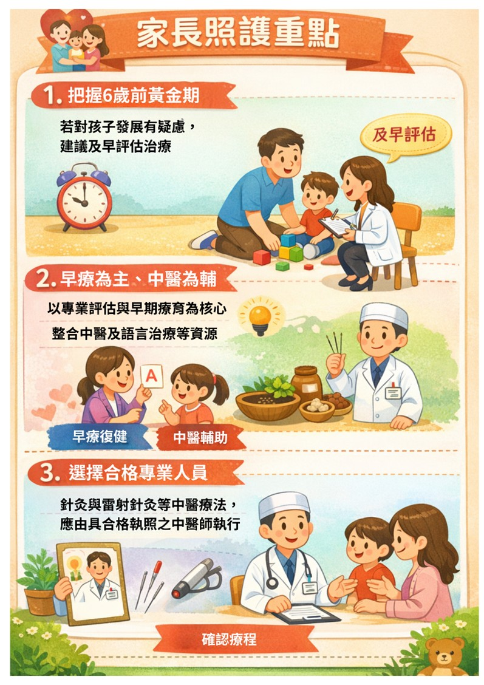

月號－健康大小事
月號－健康大小事|
孩子的發展有快有慢，但若在語言、運動、認知或社交及情緒等面向有明顯落後同齡孩子，可能是「發展遲緩」的訊號。臨床研究與觀察指出，及早評估、把握孩子6歲前的黃金期，並結合早療與跨團隊照護，能提升孩子在日常生活學習與互動上的進步。 |
|
什麼是兒童發展遲緩？ 發展遲緩是指孩子在6歲以前，因生理、心理或環境等因素，在以下面向的發展速度較同齡孩子慢： 1.語言發展遲緩：語言理解或表達能力明顯落後。 |
|
發展遲緩的原因多元，常見相關因素有那些? 目前約只有2至3成能夠找出明確的病因，並以「遺傳」和「環境」的影響佔最大宗。除了基因及染色體變異，有些早產、難產兒出生後，常伴隨神經系統發育問題，造成癲癇發生及發展遲緩。然而，大多數「發展遲緩」的孩童屬於輕度或中度程度，因此常容易被認為只是發展較慢而被忽略。 |
|
發展遲緩看中醫有幫助嗎？中醫有哪些療法？ 近年來，許多實證研究與臨床經驗發現，發展遲緩孩童比起單純西醫治療，若同時接受中醫療法，在發展上也能看見明顯進步。因此，中醫治療漸漸的也越來越被重視，以下為中醫常使用的治療方法： |
|
1.針灸：透過刺激特定穴位，調整氣血運行，達到改善身體功能的作用。 2.口服中藥：常使用「開竅醒腦」、「益氣健脾」的中藥，並搭配望聞問切四診合參後開立合適的藥方。 |
|  |
|
中醫治療發展遲緩的5大優點 1.提升治療接受度：統計顯示，近7000名接受中醫治療的腦性麻痺兒童中，約有76%每年中醫就診超過20次，相當於每月1~2次，顯示家長及孩童對中醫療法具有高接受度。 |
|
家長照護重點 1.把握6歲前黃金期：若對孩子發展有疑慮，建議及早評估，不必過度等待。 |
|  |
|
孩子的發展不是比速度，而是找對方法、給對支持。若家長對孩子語言、動作或互動有疑慮，建議及早就醫評估，把握6歲前黃金介入期，在專業醫療團隊引導下，透過早療並視需求整合中醫輔助療法，陪孩子健康成長。 |
|
資料來源
1.慢一點沒關係，中醫陪孩子長大，針灸對兒童發育遲緩有什麼幫助？ |